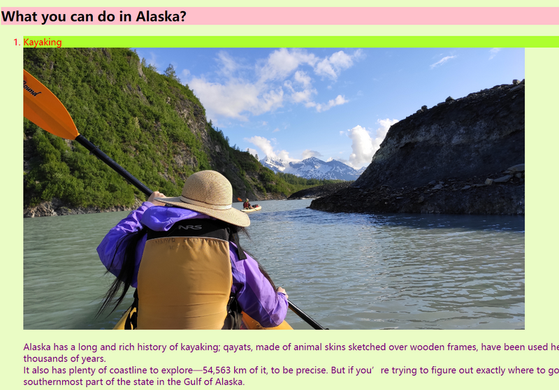
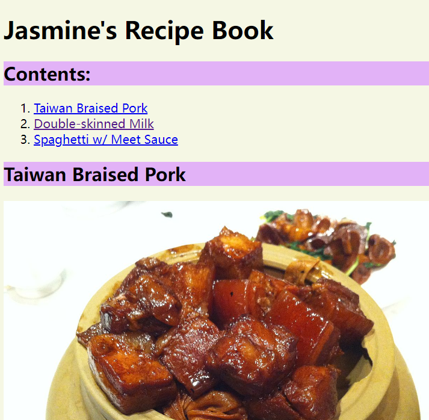

My first time to develop a whole webpage from scratch! It' 's a project assigned in my Khan Academy HTML/CSS course. What I did was a page intruducing tourism resources of Alaska, and recommending what to see and what to do there.
The purpose of the project was to practise styling a webpage with diffrent text colors and background colors, and inserting pictures in a webpage.
After finishing the project. I tried to set up a website with what I did in the project as the home page. And I did it, using my Synology diskstation, which has a website plug-in called Web Station allowing me to set up a website on the machine. Though it took me some time to figure out how to use the plug-in since the tutorial of the plug-in was hard to find, it was quite easy to put the website in work, just renaming my HTML file as main.html and uploading it to a specified directory!.
And what's more exciting about my first webpage is that it can be visited from the internet, cuz I have a VPS with a public IP, which serves as a proxy of my diskstation. Here is the URL: http://qindong2010.github.io
the second project of mine was from an assignment of Khan Academy course too. It is a recipe book, with all the food being my daughter's favorites.
This project features links, both internal and external. Thus, by clicking on the items in the table of content, the viewer can be navigated to the corresponding dishes, and by clicking on the reference informtion for each dish, people can visit the source webpage where the recipe comes from.
Also, the project features tables - there is a table for each recipe, listing the ingredients and quantities of the food. However, those tables have the simplest format, without any decoration, not even the border lines.
URL: http://qindong2010.github.io/Jas Recipe.html
My third webpage design project is this blog webpage itself.
to be continued...
Back to Top